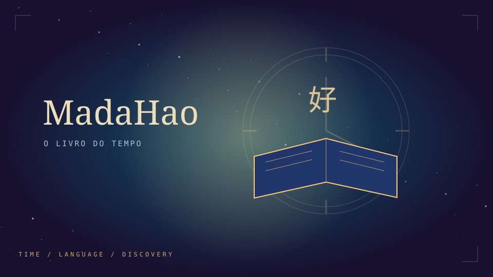

Lumi & the Lost Stars
Uma pequena gata. Uma floresta encantada. Uma jornada para devolver as estrelas ao céu.
PROJETOS / JOGOS / EXPERIMENTOS
Jogos para descobrir. Ideias para explorar.
Eu crio cada experiência. Você escolhe a próxima aventura.

AVENTURA / MANDARIM01 / A COLEÇÃO
Cinco jogos e quatro projetos, criados por mim.
Escolha uma experiência e descubra por onde ela te leva.
Uma pequena gata. Uma floresta encantada. Uma jornada para devolver as estrelas ao céu.
O desconhecido tem um som. Uma experiência de terror através da escuta.
Uma aventura pelo tempo e uma descoberta do mandarim. Abra O Livro do Tempo.
Histórias, povos e memórias. Explore saberes e culturas dos povos originários das Américas.
Aprender idiomas pode ser uma aventura. Descubra o PolyGlotRPG.
Seu dia em blocos. Um espaço para organizar tempo, aulas, finanças e descanso.
Pratique a sustentação oral e explore casos fictícios em sessões de júri simulado.
O primeiro cuidado, um passo de cada vez. Orientações de primeiros socorros para ler ou ouvir.
Uma aventura de descobertas sobre computação quântica. Explore qubits e medições com a ajuda de Lumi.
As próximas ideias estão a caminho.
Experiências para apertar play
e descobrir o que vem depois.
Do primeiro esboço à tela.
Coisas que nascem da curiosidade.
Testes, descobertas e caminhos
que ainda não têm um nome.
Uma ideia de cada vez. Um universo a cada criação.
02 / POR AQUI
Eu sou a pessoa por trás do AspiraQualquer. Crio meus projetos de forma independente e reúno aqui jogos, experiências e tudo que surgir pelo caminho.
Mais do que um resultado final, cada criação é uma chance de explorar uma ideia. Este portfólio vai crescendo junto com elas.
03 / PRÓXIMA CONEXÃO
Você também me encontra por aqui. Escolha a rede que prefere para me acompanhar.